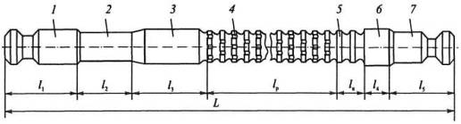
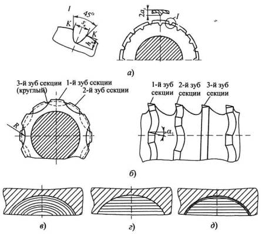
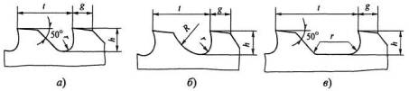

Протяжки - это многозубые высокопроизводительные инструменты, нашедшие широкое применение в серийном и особенно в массовом производствах. Они относятся к инструментам с конструктивной подачей, так как при протягивании движение подачи отсутствует.
Шейка и следующий за ней переходный конус выполняют вспомогательную роль. Их длина должна обеспечивать возможность присоединения протяжки к патрону перед началом протягивания. Переходный конус обеспечивает свободное вхождение передней направляющей в протягиваемое отверстие. Диаметр шейки изготовляют меньше диаметра хвостовика на 0,3...1,0 мм.
Передняя направляющая служит для центрирования оси заготовки относительно оси протяжки перед протягиванием, чтобы исключить перекос заготовки, который может привести к поломке протяжки или порче обработанной поверхности. Длина передней направляющей должна быть равна длине Lо протягиваемого отверстия, а при больших длинах - не менее 0,6Lо. Форма передней направляющей должна соответствовать форме отверстия в заготовке, а допуск на диаметр направляющей берется по е8.
Задняя направляющая выполняет ту же роль, что и передняя, предохраняя протяжку от перекоса при выходе ее калибрующей части из обработанного отверстия. По длине она несколько меньше длины передней направляющей, а ее диаметр выполняется точнее, с допуском по f7. Форма задней направляющей должна быть такой же, как у протянутого отверстия.
Для автоматического возврата протяжки в исходное положение после протягивания, особенно при больших длине и диаметре протяжки, после задней направляющей иногда предусматривается задний хвостовик, закрепляемый в патроне каретки станка, и который по форме подобен переднему хвостовику. Наличие заднего хвостовика также предохраняет протяжку от провисания и перекоса в отверстии и позволяет избежать искажения формы и размера обработанного отверстия.
Режущая (рабочая) часть протяжки служит для удаления припуска и формирования поверхности протянутого отверстия. Она содержит черновые и чистовые, а при групповой схеме резания еще и переходные зубья, располагаемые на ступенчато-конической поверхности. Длина режущей части равна произведению числа зубьев на их шаг, который, в свою очередь, зависит от требований к точности протягиваемого отверстия, шероховатости его поверхности и величины снимаемого припуска. Диаметры зубьев рассчитывают исходя из принятой схемы резания.
Калибрующая часть содержит 4...10 зубьев одинакового диаметра, равного диаметру последнего чистового зуба, и служит для калибровки отверстия, уменьшения рассеяния его размеров, а также является запасом на переточку: по мере износа чистовых зубьев калибрующие зубья заточкой могут быть переведены в чистовые, тем самым увеличивая общий срок службы протяжки.
Калибрующие зубья припуск не срезают, а удаляют микронеровности поверхности, остающиеся после прохода чистовых зубьев, и обеспечивают направление протяжки в отверстии.
Конструкция режущей части протяжки определяется принятой схемой резания, под которой понимают принятый порядок последовательного срезания припуска.
Рассмотрим первые две схемы на примере обработки круглых отверстий.
Одинарная схема резания характерна тем, что каждый зуб протяжки срезает припуск определенной толщины по всему периметру обрабатываемого отверстия за счет того, что диаметр каждого последующего зуба больше диаметра предыдущего на величину 2аz, где аz - подъем или подача на зуб (αz = Sz).
При большей толщине среза жесткость стружки мешает ее завиванию во впадине между зубьями. Стружка упирается в дно впадины, в результате чего возможны ее заклинивание и даже поломка протяжки.
Стружкоделительные канавки прорезают шлифовальным кругом при небольшом (2...3°) поднятии заднего центра протяжки для создания заднего угла по дну канавки. При этом ослабляются режущие кромки зубьев в точках К пересечения канавок с задней поверхностью. Это приводит к более интенсивному износу зубьев на этих участках и, соответственно, к снижению стойкости протяжки.
Схема группового резания (б) отличается от вышеописанной тем, что все режущие зубья делятся на группы или секции, состоящие из 2...5 зубьев, в пределах которых зубья имеют одинаковый диаметр. Припуск по толщине делится между группами зубьев, а по ширине - между зубьями группы благодаря широким выкружкам, выполненным в шахматном порядке. Каждый зуб снимает отдельные части припуска участками режущей кромки, где нет выкружек. При этом благодаря большой ширине выкружек снимаемая стружка не имеет ребер жесткости, хорошо скручивается в канавках между зубьями, даже при увеличении толщины среза до az = 0,3...0,4 мм при обработке стали и до az = 1,0...1,2 мм - при обработке чугуна. За счет этого при групповой схеме резания возможно существенное сокращение длины режущей части протяжки.
Широкие выкружки на зубьях обеспечивают увеличение угла стыка выкружек и режущих кромок до 130...150°, что в сочетании с задними углами ?1 = 4...6° на вспомогательных режущих кромках, полученными при вышлифовывании выкружек, обеспечивает повышение стойкости протяжек в 2-3 раза по сравнению с одинарной схемой резания.
При проектировании протяжек с групповой схемой резания последний зуб в группе, не имеющий выкружек и выполняющий роль зачистного, делают с занижением на 0,02...0,04 мм по диаметру относительно других зубьев. Это необходимо, чтобы избежать образования кольцевых стружек, возможных при упругом восстановлении обработанной поверхности после прохода прорезных зубьев.
Недостатком групповой схемы резания является повышенная трудоемкость изготовления протяжки по сравнению с одинарной схемой.
Форма режущих кромок зубьев протяжки определяется принятой схемой формирования обработанной поверхности.
При профильной схеме (в) контур всех режущих кромок подобен профилю протягиваемого отверстия. При этом в окончательном формировании обработанной поверхности принимают участие только последние зубья, а остальные служат для удаления припуска. При сложной форме отверстий использование такой схемы нецелесообразно, так как усложняет изготовление протяжки. Профильная схема в основном применяется при формировании простых по форме поверхностей, например, круглых или плоских.
При использовании генераторной схемы (г) форма режущих кромок не совпадает с формой обработанной поверхности, которая формируется последовательно всеми зубьями. В этом случае упрощается изготовление протяжки путем шлифования напроход всех зубьев абразивным кругом одного профиля. Однако при этом на обработанной поверхности возможно появление рисок (ступенек) вследствие погрешностей заточки зубьев, что ухудшает качество обработанной поверхности.
При высоких требованиях к шероховатости обработанной поверхности рекомендуется использовать комбинированную схему (3, д), при которой два-три последних режущих и калибрующие зубья работают по профильной, а остальные - по генераторной схеме.
Увеличение размеров зубьев и стружечных канавок ограничивается допустимыми значениями длины протяжки и ее прочностью.
На рисунке ниже показаны профили зубьев и стружечных канавок, нашедшие наибольшее применение на практике: с прямолинейной (а) и криволинейной спинками (б), с канавкой удлиненной формы (в).
Зубья с прямолинейной спинкой проще в изготовлении, но с точки зрения условий завивания и размещения стружки уступают форме с криволинейной спинкой. Они используются в основном у протяжек с одинарной схемой резания при обработке сталей и хрупких материалов (чугун, бронза и др.).
При обработке стали и других пластичных металлов протяжками с групповой схемой резания, когда снимаются толстые стружки, рекомендуется использовать зубья с криволинейной спинкой, плавно сопрягающейся с передней поверхностью зуба.
Поверхности канавок рекомендуется полировать в целях улучшения завивания стружки и легкого освобождения от нее после прекращения процесса резания.
Передний угол γ выбирается по рекомендациям в зависимости от обрабатываемого материала. Так, для сталей разных групп обрабатываемости γ = 10...20°, для чугунов разной твердости γ = 4...10°, для алюминия и меди γ = 12...15°.
Учитывая, что зубья внутренних протяжек перетачиваются только по передней поверхности и при переточке их диаметр уменьшается, на черновых зубьях задний угол α = 3°, на чистовых α = 2°, а на калибрующих α = 0...1°. Эти значения задних углов значительно меньше оптимальных, в результате чего снижается стойкость инструмента. Однако увеличивать их нельзя, так как это привело бы к быстрой потере размера протяжки при переточках.